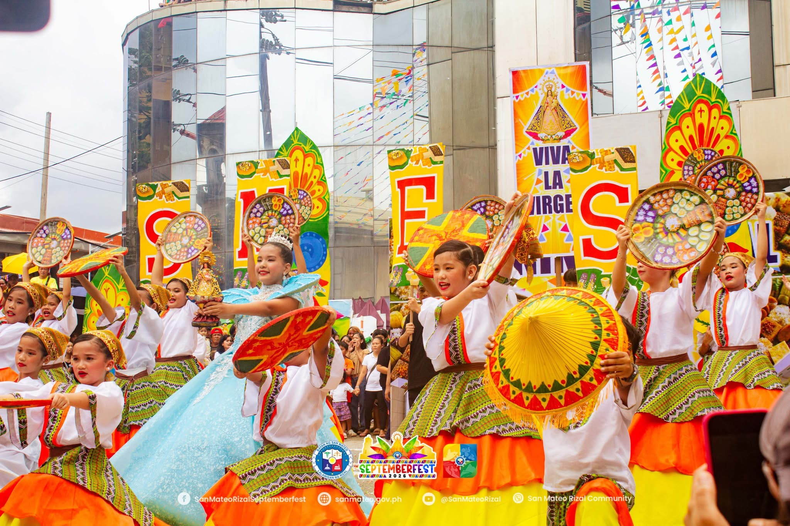

Welcome to
SAN MATEO,
RIZALEÑO!
A celebration rooted
in San Mateo.
Every September, San Mateo comes together for colorful parades, cultural performances, local flavors, and shared traditions. Discover what makes these festival days meaningful to the whole community.
To celebrate the spirit of San Mateo.
Welcome to our website dedicated to the Kakanin Festival of San Mateo, Rizal, a celebration of Filipino culture, tradition, and the beloved local delicacies that bring the community together. Through this website, we aim to showcase the beauty of the festival and help visitors appreciate how kakanin is more than just food, it is a part of our identity, tradition, and community.
See what's happening.
A little more than a schedule.
Get ready for the festival with practical details and local discoveries. Explore what is happening, find a festival favorite, and learn more about the traditions and places that make San Mateo special.

COME CELEBRATE WITH US Find your festival moment